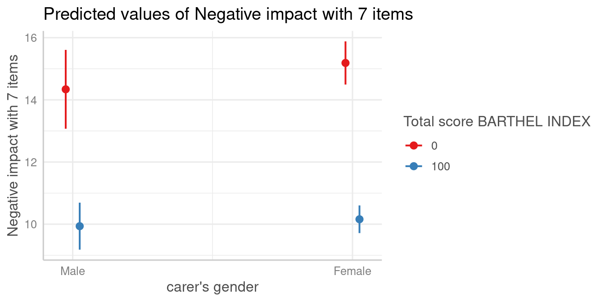
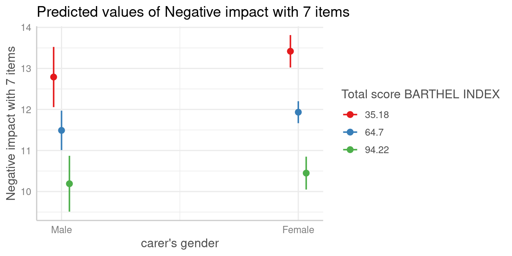
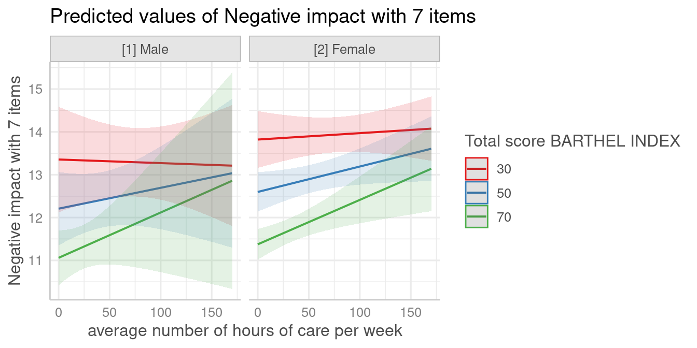
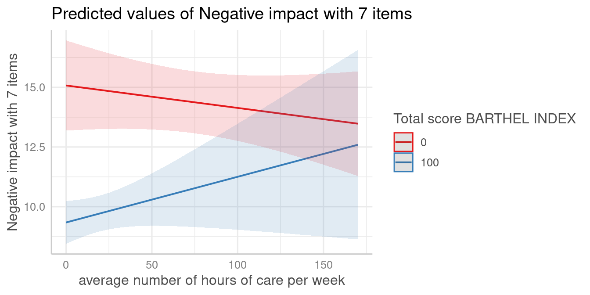
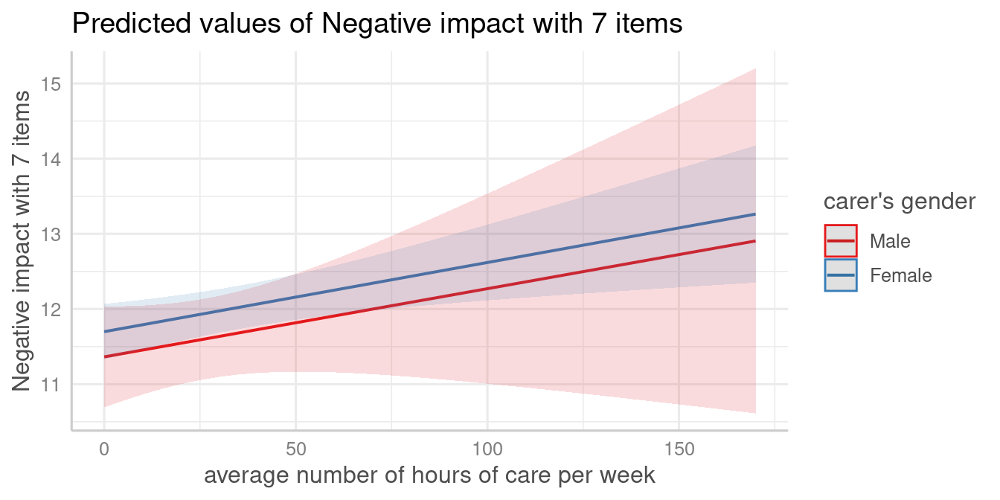
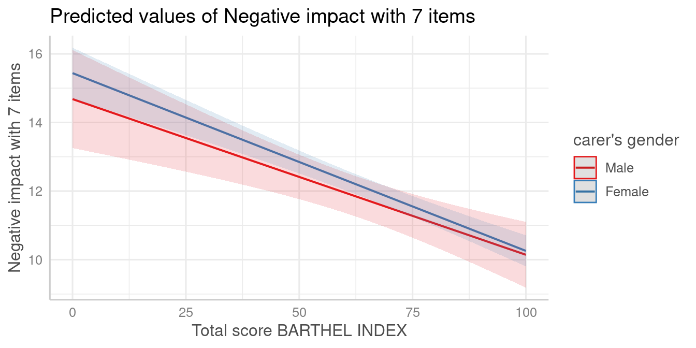
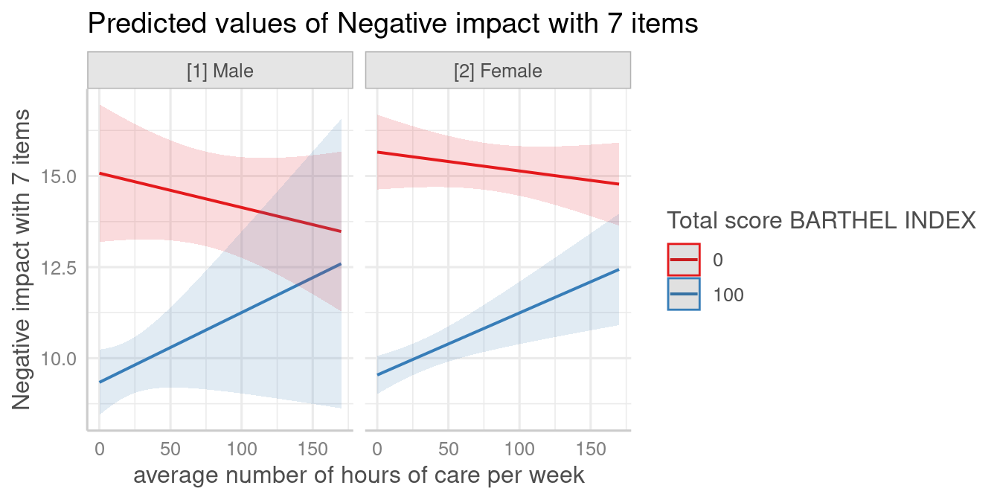

Plotting Interaction Effects of Regression Models
Daniel Lüdecke
2022-08-07
Source:vignettes/plot_interactions.Rmd
plot_interactions.RmdThis document describes how to plot marginal effects of interaction terms from various regression models, using the plot_model() function. plot_model() is a generic plot-function, which accepts many model-objects, like lm, glm, lme, lmerMod etc.
plot_model() allows to create various plot tyes, which can be defined via the type-argument. The default is type = "fe", which means that fixed effects (model coefficients) are plotted. To plot marginal effects of interaction terms, call plot_model() with:
-
type = "pred"to plot predicted values (marginal effects) for specific model terms, including interaction terms. -
type = "eff", which is similar totype = "pred", however, discrete predictors are held constant at their proportions (not reference level). It internally calls via . -
type = "emm", which is similar totype = "eff". It internally calls via . -
type = "int"to plot marginal effects of interaction terms in a more convenient way.
plot_model() supports labelled data and automatically uses variable and value labels to annotate the plot. This works with most regression modelling functions.
Note: For marginal effects plots, sjPlot calls functions from the ggeffects-package. If you need more flexibility when creating marginal effects plots, consider directly using the ggeffects-package.
Two-Way-Interactions
Note: To better understand the principle of plotting interaction terms, it might be helpful to read the vignette on marginal effects first.
To plot marginal effects of interaction terms, at least two model terms need to be specified (the terms that define the interaction) in the terms-argument, for which the effects are computed. To plot marginal effects for three-way-interactions, all three terms need to be specified in terms.
A convenient way to automatically plot interactions is type = "int", which scans the model formula for interaction terms and then uses these as terms-argument.
library(sjPlot)
library(sjmisc)
library(ggplot2)
data(efc)
theme_set(theme_sjplot())
# make categorical
efc$c161sex <- to_factor(efc$c161sex)
# fit model with interaction
fit <- lm(neg_c_7 ~ c12hour + barthtot * c161sex, data = efc)
plot_model(fit, type = "pred", terms = c("barthtot", "c161sex"))
For type = "int", no terms need to be specified. Note that this plot type automatically uses the first interaction term in the formula for the x-axis, while the second term is used as grouping factor. Furthermore, if continuous variables are used as second term, you can specify preset-values for this term with the mdrt.values-argument, which are then used as grouping levels.
In this example, the second term is a factor with two levels (male/female), so there is no need for choosing specific values for the moderator.
plot_model(fit, type = "int")To switch the terms, in this example barthtot and c161sex, simply switch the order of these terms on the terms-argument and use type = "pred".
plot_model(fit, type = "pred", terms = c("c161sex", "barthtot [0, 100]"))
To switch the terms for plot-type type = "int", you need to re-fit the model and change the formula accordingly, i.e. using c161sex as first term in the interaction.
# fit model with interaction, switching terms in formula
fit <- lm(neg_c_7 ~ c12hour + c161sex * barthtot, data = efc)
plot_model(fit, type = "int")
By default, for continuous variables, the minimum and maximum values are chosen as grouping levels, which are 0 and 100 - that’s why the previous two plots are identical. You have other options as well, e.g. the mean-value and +/- 1 standard deviation (as suggested by Cohen and Cohen for continuous variables and popularized by Aiken and West 1991), which can be specified using mdrt.values.
plot_model(fit, type = "int", mdrt.values = "meansd")
Three-Way-Interactions
Since the terms-argument accepts up to three model terms, you can also compute marginal effects for a 3-way-interaction.
# fit model with 3-way-interaction
fit <- lm(neg_c_7 ~ c12hour * barthtot * c161sex, data = efc)
# select only levels 30, 50 and 70 from continuous variable Barthel-Index
plot_model(fit, type = "pred", terms = c("c12hour", "barthtot [30,50,70]", "c161sex"))
Again, type = "int" will automatically plot the interaction terms, however, using mdrt.values = "minmax" as default - in this case, the “levels” 0 and 100 from continuous variable barthtot are chosen by default.
plot_model(fit, type = "int")
#> [[1]]
#>
#> [[2]]
#>
#> [[3]]
#>
#> [[4]]